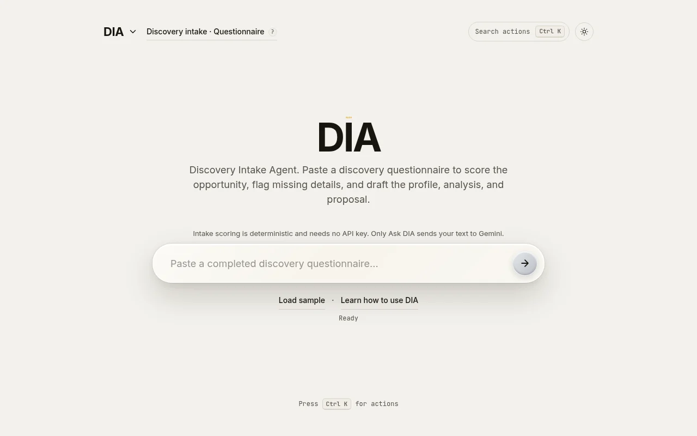
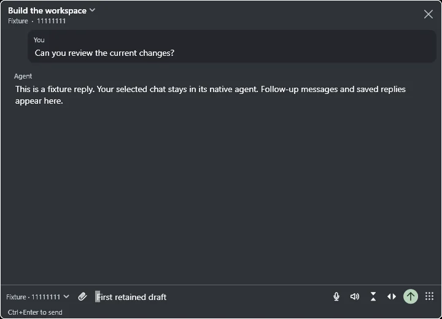

Product · Partner ecosystems · AI systems
Enterprise experience.
Practical AI systems.
I bring 10+ years in product management, partner ecosystems and commercial operations to building tools for the work I know.
I define the architecture, direct AI-assisted implementation, and personally test and validate the result. The work below shows the systems, the decisions and the evidence behind them.
01K2F7Q8VZ3NBRJ4WYD6XM0AHC
# the id comes back from the hub, not the client.
# a send that could not be recorded fails, loudly.TiaTeacher workspace, canvas
 DIADiscovery intake
DIADiscovery intake
BespokeNative chat capture
TiaMobile conversation DIAScored intake results
DIAScored intake results
Featured / 2026Move across to browse
Index / Case studies
Featured
Bespoke · TiaCase Studies & Builds
01 / From problem to systemBespoke
Operator-controlled reading, voice interaction and desktop actions — a local tool for moving between the written word, conversation and repeatable steps.
The operator stays in control of each mode: speaking text, asking a turn, a live conversation, or replaying a verified desktop step against a durable target. Replay follows the operator’s selected approval mode.
Baton hand-offs run as a Bespoke surface: routing and coordination between agents, so work can move through the wider environment without a separate case study here.
DIA
A questionnaire becomes a scored opportunity and three useful documents.
A deterministic pipeline handles parsing, validation, scoring and document generation. A Gemini agent uses those functions as tools.
I brought together the workflow, interface, document generation, testing and deployment for the Google for Startups AI Agents Challenge.
Design decisions & what to inspect
The deterministic path makes the scoring and generated documents inspectable without relying on a model response. The agent can call the same functions rather than invent a separate scoring process.
The public repository includes parser and scoring logic, fixtures, tests and an evaluation harness. See the dated build record ↓
Blackboard
A visible record of work across people and agents.
A local viewer for file-based events: handoffs, shared artifacts and activity across the fleet. I use it in my own environment and refine it through practice.
The record remains readable even when the viewer is down.
Events are plain JSON files.The build record
02 / Selected evidence- 06–09 Jun 2026DIAFrom public demo to capture tooling
- 27–28 Jul 2026Amazon AdsA queryable reporting pipeline
- 08 Oct 2026BespokeRepeatable desktop actions
- 16–23 Oct 2026Family TreeNwakwesi family record
- 23 Oct 2026DIAPersona v1.2 and the Savant scoring build
- 11 Oct–15 Nov 2026TiaOutput canvas, gated exports and workspace rebuild
- 09 Oct–17 Nov 2026BespokeMini-cursor chat, native capture and the Navy companion
- 09 Oct–18 Nov 2026BASH siteServices, clay launch, booking routes and intake
- 23 Oct–17 Nov 2026ComponentsIcons, prototypes and reference sections
- 16–17 Nov 2026Navy’s Petting ZooThe cast, their reactions, and a day/night world
- 23 Oct–15 Nov 2026This siteThe business card and the November redesign
- 10 Oct–13 Nov 2026Supporting systemsThe smaller repos the main work runs on
Tools I work with
03 / The supporting systemsBespoke
Operator-controlled reading, voice interaction and desktop actions. A local tool for moving between the written word, conversation and repeatable steps.
- speak
- Read text with playback controls.
- ask
- Answer a prompt, then speak the response.
- live
- Stream microphone audio and native audio replies, with interruption handling.
- cursor
- Desktop actions with durable targets and verified step recipes.
Baton
Routing and coordination between agents, supporting how work moves through the wider environment.
Agent Eggs
Portable context and capabilities, packaged so useful knowledge can travel between environments.
Reusable context packagesResearch & writing
04 / The thinking behind the workdPKL is the foundation of how I think about AI systems. These four connected works explore knowledge, execution, the operator’s role and human autonomy.
The Deterministic Personal Knowledge Layer (dPKL): Agents as the Interface to Deep Execution
A local-first approach to making working knowledge portable and queryable, with agents acting as an interface to execution.
What Expectations? AI, Telecommunications, and the Tool It Always Was
AI as infrastructure and a tool, with human judgment shaping how its capabilities are used.
Agents Are Your New Mouse and Keyboard: An Operator’s Doctrine for Driving Agents
An operating practice for directing agents through command-line tools, documentation, reusable capabilities and human validation.
What Autonomy Is, and Why It Remains Exclusive to Humans
A philosophical argument for keeping purpose and responsibility with humans, and designing agents for bounded, reliable execution.
The ideas and operational experience are mine.
Where the judgment comes from
05 / Enterprise experienceProduct lines, partner programs and commercial operations taught me to account for the messy parts: incomplete information, handoffs and competing priorities.
That experience shapes the problems I choose, the systems I design and what I check before calling something useful.
Put a workflow to work.
06 / Work with meHave a recurring workflow that needs attention? I work on business automation through BASH. Start with one task, agree to the scope and acceptance checks, and then build from there.
Bash Systems rates, CAD/hr: Consultation $75 · Project $155 · Advanced technical $215.
navy@bashsystems.net